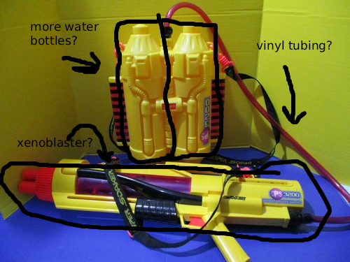

Ideas
Use the text box below to send us any of your ideas on how we could improve our Xenoblasters.
User feedback means a lot to us, as we grow a lot slower on our own.
Our Goals
The other day, I saw an image of a Larami CPS 3200 Super Soaker with its own fuel backpack and it made me wonder if we could replicate this technology with our Xenoblasters.
CPS 3200:
